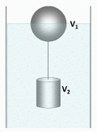

NO ME SALEN
EJERCICIOS RESUELTOS DE FÍSICA DEL CBC
FLUIDOS - PRINCIPIO DE ARQUÍMEDES |
|

|
| |
NMS 27) En la figura se observa una esfera unida, mediante una cuerda
inextensible y de masa despreciable, a un cilindro sumergido flotando
dentro de un recipiente lleno de líquido. La esfera tiene sumergida la
mitad de su volumen. El líquido tiene una densidad = 1,04 g/cm³. El
volumen de la esfera es V1 = 0,5 m³ y su densidad es 120 kg/m³. El
cilindro tiene una densidad de 3.040 kg/m³. Calcular:
a) El volumen V2 del cilindro.
b) La tensión de la cuerda. |
 |
|
Parece más difícil de lo que es. De todos modos yo sé que vos no sos de los que se achican. De modo que allá vamos.
Como en este ejercicio ya aparecen muchas fuerzas (al contrario del la mayoría de los ejercicios de flotación), vamos a hacer los DCLs. |
|
|
 |
Sobre la esfera hay aplicadas 3 fuerzas, veamos si estás de acuerdo: el empuje que recibe la esfera del líquido, Ee, el propio peso de la esfera, Pe, y la tensión de la hace la cuerda, T.
Sobre el cilindro también actúan 3 fuerzas: el empuje que recibe del líquido, Ec, el propio peso del cilindro, Pc, y la tensión de la cuerda, T.
Las ecuaciones de equilibrio dirán:
Ee = Pe + T [1]
T + Ec = Pc [2]
|
|
|
tené presente que las cuerdas sin masa ejercen igual fuerza en ambos extremos
|
Además, según Arquímedes, los empujes son iguales a los pesos de los líquidos desalojados.
Ee = γlíq . ½ Ve [3]
Ec = γlíq . Vc [4]
Donde Ve es V1 que es el volumen de la esfera (que desplaza líquido sólo con la mitad sumergida), y Vc es V2, el volumen del cilindro.
Si a esto le agregamos la definición de densidad, ρ = m/V, tenés más que suficiente para responder todas las preguntas que hace el enunciado y varias otras más. Yo te lo hago, no llores.
ρe = me / Ve [5]
ρc = mc / Vc [6]
Arranquemos. De la [5] sale la masa de la esfera, y multiplicada por la gravedad, ya tenemos su peso.
Pe = me . g
Pe = ρe . Ve . g [7]
Meto la [3] y la [7] en la [1], despejo y calculo T que es una de las preguntas del enunciado.
T = Ee – Pe
T = γlíq . ½ Ve – ρe . Ve . g
T = 10.400 N/m3 . ½ 0,5 m3 – 1.200 N/m3. 0,5 m3
|
|
acordate que peso específico es igual a densidad por gravedad
γ = ρ g |
|
|
|
Con ese dato voy a la [2] en la que también reemplazo el empuje con la [4] y despejo el peso del cilindro. De ahí me voy a la [6] y saco el volumen del cilindro. Just do it!
|
|
|
|
|
|
| ¿Fue tan grave? |
|
|
| DESAFÍO: |
|
 |
| Algunos derechos reservados.
Se permite su reproducción citando la fuente legítima, o sea, este sitio. Última actualización
jun-11. Buenos Aires, Argentina. |
|
|
| | |
|
|